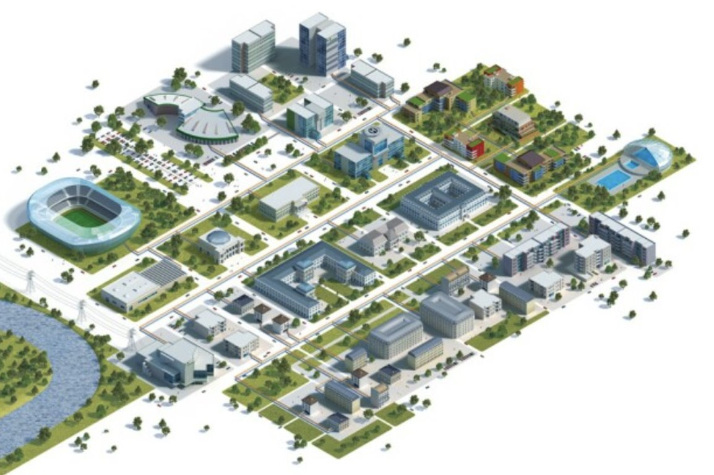

During this project, we had a model representing a city's computer network, and we had to configure the network for certain parts of the city: eXia, the library, the ENGIE building, the DIGIPLEX building, as well as the DATACENTER.
Each building had to meet a certain number of standards. For example, the eXia building had to have a DHCP, DNS and FTP server. The ENGIE and DIGIPLEX buildings had to have different VLANs, inter-VLAN routing and SSH configuration between all switches. And the DATACENTER had to be configured for IPv6, with an IPv6 tunnel between it and the eXia building.